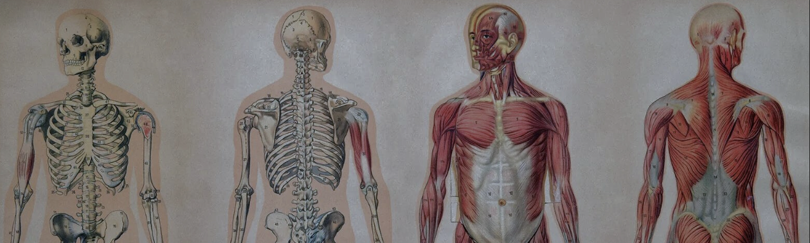
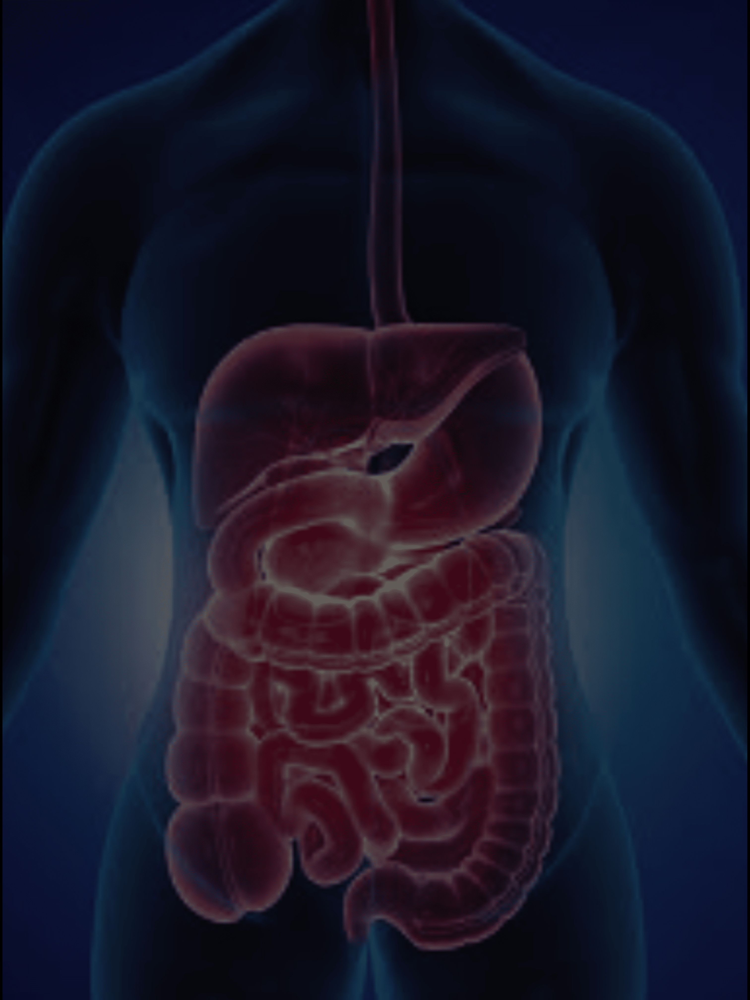
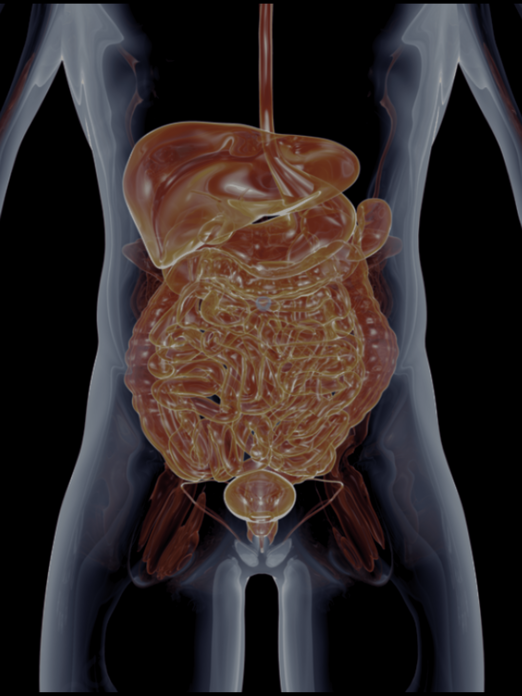
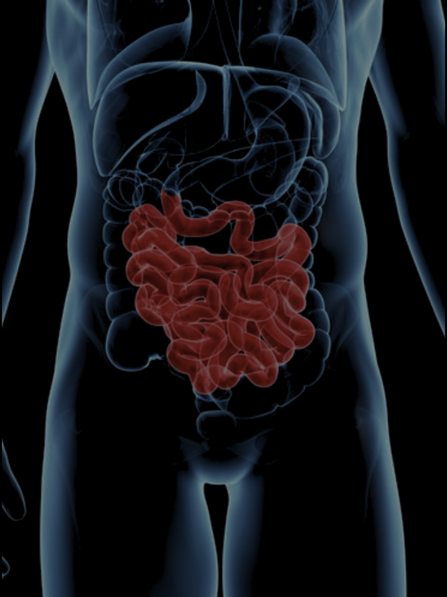
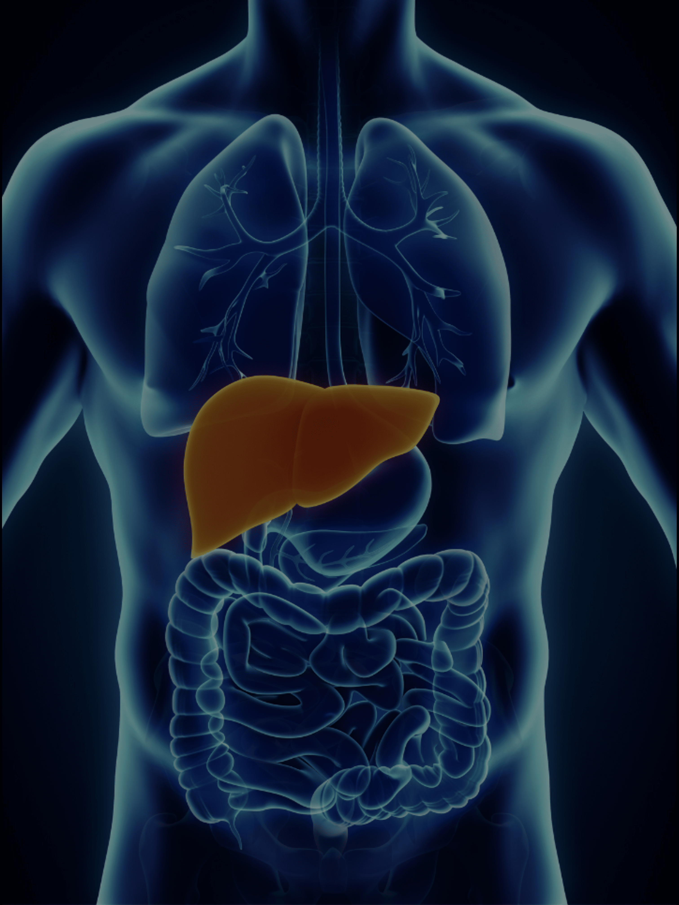

Digestive System
Understanding the Digestive System helps us understand how the food we eat plays a role in maintaining good health and overall well-being
Crackers and Bananas Experiment
|

Section 1:Digestion Process-The Bananas and Crackers being put in the bag simulates the |
Section 1:Digestion Process Instructions |
|

Subsection 1:Transferring Process-The liquid flowing out the stocking stimulates the nutrients |
Subsection 1:Transferring Process Instructions |
|

Section 2:Absorption-The paper towel that absorbed the largest amount of water is |
Section 2:Absorption Instructions |
|

Section 3:Bile Action-Bile is a a mixture of fluid, electrolytes, and organic molecules produced in the liver and is stored in the gallbladder. It breaks |
Section 3:Bile Action Instructions |
CONCLUSION
The digestive system is an important part of our body crucial for our survival. We learned how different types of organs worked together in order for our body to function. Through this activity, we are able to understand how different nutrients work in our body. We can use this in the real world to be more aware of what we eat and put in our body.
×
Home
About Sapphire Heights
Contact Us
Courses
Extra-curricular
Sapphire Heights Academy

Sapphire Heights Academy
Home of the Blue Phoenix